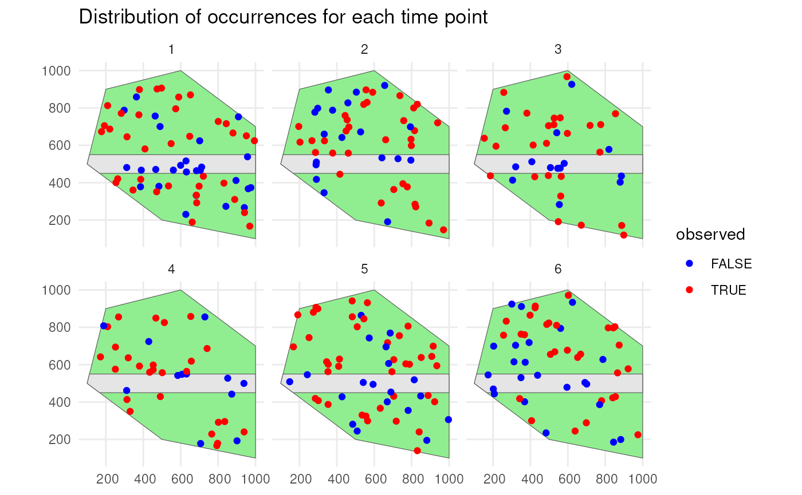
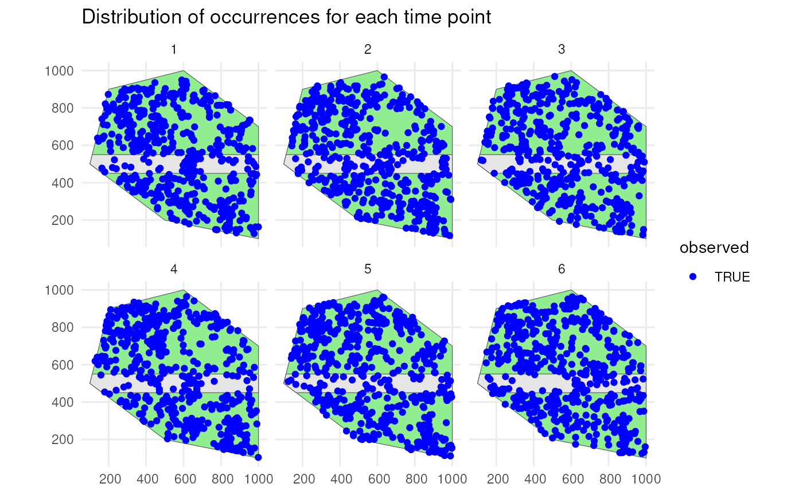

4. Creating cubes for multiple species
Source:vignettes/articles/multi-species-approach.Rmd
multi-species-approach.RmdThe workflow for simulating a biodiversity data cubes is provided in tutorials 1-3. However, this workflow only describes a data cube for a single species. As such, it is not really a cube since it is not three-dimensional. Furthermore, many biodiversity indicators are calculated over multiple species.
This tutorial describes the functions provided to simulate biodiversity data cubes for multiple species directly.
# Load packages
library(gcube)
library(sf) # work with spatial objects
library(dplyr) # data wrangling
library(ggplot2) # data visualisationSpatial extent
As input, we create a polygon in which we simulate occurrences. It represents the spatial extent of the species.
polygon <- st_polygon(list(cbind(c(500, 1000, 1000, 600, 200, 100, 500),
c(200, 100, 700, 1000, 900, 500, 200))))The polygon looks like this.
ggplot() +
geom_sf(data = polygon) +
theme_minimal()Also consider a road across our polygon.
# Define the road width
road_width <- 50
# Create road points
road_points <- rbind(c(100, 500), c(1000, 500))
# Create road-like polygon within the given polygon
road_polygon <- st_linestring(road_points) %>%
st_buffer(road_width) %>%
st_intersection(polygon) %>%
st_polygon() %>%
st_sfc() %>%
st_as_sf() %>%
rename(geometry = x)The result looks like this.
ggplot() +
geom_sf(data = polygon, fill = "lightgreen") +
geom_sf(data = road_polygon) +
theme_minimal()
We also need a grid. Each observation will be designated to a grid cell.
cube_grid <- st_make_grid(
st_buffer(polygon, 50),
n = c(20, 20),
square = TRUE
) %>%
st_sf()The grid looks like this.
ggplot() +
geom_sf(data = polygon) +
geom_sf(data = cube_grid, alpha = 0) +
theme_minimal()Input dataframe
To generate cubes for multiple species efficiently, we create a
dataframe where each row represents a different species and where we
specify all arguments to be used by the main cube simulation functions,
viz simulate_occurrences(),
sample_observations(), filter_observations(),
add_coordinate_uncertainty(), and
grid_designation(), in separate columns. The values within
these columns can change between species.
# Create dataframe with simulation function arguments
multi_species_args <- tibble(
species_range = rep(list(polygon), 6),
initial_average_occurrences = rep(c(50, 100, 500), 2),
n_time_points = rep(6, 6),
temporal_function = c(simulate_random_walk, simulate_random_walk, rep(NA, 4)),
sd_step = c(1, 1, rep(NA, 4)),
spatial_pattern = c(rep("random", 3), rep("clustered", 3)),
detection_probability = rep(c(0.8, 0.9, 1), 2),
sampling_bias = c(rep("polygon", 3), rep("no_bias", 3)),
bias_area = c(rep(list(road_polygon), 3), rep(NA, 3)),
bias_strength = c(c(0.1, 0.2, 0.3), rep(1, 3)),
coords_uncertainty_meters = rep(c(25, 30, 50), 2),
grid = rep(list(cube_grid), 6),
seed = 123
)
# How does this dataframe look like?
glimpse(multi_species_args)
#> Rows: 6
#> Columns: 13
#> $ species_range <list> [POLYGON ((500 200, 1000 100...], [POLYGO…
#> $ initial_average_occurrences <dbl> 50, 100, 500, 50, 100, 500
#> $ n_time_points <dbl> 6, 6, 6, 6, 6, 6
#> $ temporal_function <list> function (initial_average_occurrences = 50…
#> $ sd_step <dbl> 1, 1, NA, NA, NA, NA
#> $ spatial_pattern <chr> "random", "random", "random", "clustered",…
#> $ detection_probability <dbl> 0.8, 0.9, 1.0, 0.8, 0.9, 1.0
#> $ sampling_bias <chr> "polygon", "polygon", "polygon", "no_bias…
#> $ bias_area <list> [<sf[1 x 1]>], [<sf[1 x 1]>], [<sf[1 x 1]>…
#> $ bias_strength <dbl> 0.1, 0.2, 0.3, 1.0, 1.0, 1.0
#> $ coords_uncertainty_meters <dbl> 25, 30, 50, 25, 30, 50
#> $ grid <list> [<sf[400 x 1]>], [<sf[400 x 1]>], [<sf[400…
#> $ seed <dbl> 123, 123, 123, 123, 123, 123Before we move on, we add a taxonomic hierarchy to this dataframe.
This might be used to calculate phylogenetic indicators upstream or just
to have a more complete and comprehensible dataset for cube generation.
We generate a taxonomic hierarchy using the
generate_taxonomy() function.
?generate_taxonomyWe need to specify at least the number of species, genera and families. Higher taxonomic levels are default on 1.
# Define number of species
n_specs <- nrow(multi_species_args)
# Generate taxonomic hierarchy
taxonomy <- generate_taxonomy(
num_species = n_specs,
num_genera = 4,
num_families = 2,
seed = 123
)
# How does the taxonomic hierarchy look like?
taxonomy
#> species species_key genus family order class phylum kingdom
#> 1 species1 1 genus3 family1 order1 class1 phylum1 kingdom1
#> 2 species2 2 genus3 family1 order1 class1 phylum1 kingdom1
#> 3 species3 3 genus3 family1 order1 class1 phylum1 kingdom1
#> 4 species4 4 genus2 family2 order1 class1 phylum1 kingdom1
#> 5 species5 5 genus3 family1 order1 class1 phylum1 kingdom1
#> 6 species6 6 genus2 family2 order1 class1 phylum1 kingdom1We can add this taxonomic hierarchy to our dataframe with function arguments to get a complete dataset.
# Combine dataframes
multi_species_dataset1 <- cbind(taxonomy, multi_species_args) %>%
as_tibble() # To compare with dataset2, see next chunk
# How does the dataset look like?
glimpse(multi_species_dataset1)
#> Rows: 6
#> Columns: 21
#> $ species <chr> "species1", "species2", "species3", "speci…
#> $ species_key <int> 1, 2, 3, 4, 5, 6
#> $ genus <chr> "genus3", "genus3", "genus3", "genus2", "g…
#> $ family <chr> "family1", "family1", "family1", "family2"…
#> $ order <chr> "order1", "order1", "order1", "order1", "o…
#> $ class <chr> "class1", "class1", "class1", "class1", "c…
#> $ phylum <chr> "phylum1", "phylum1", "phylum1", "phylum1"…
#> $ kingdom <chr> "kingdom1", "kingdom1", "kingdom1", "kingd…
#> $ species_range <list> [POLYGON ((500 200, 1000 100...], [POLYGON…
#> $ initial_average_occurrences <dbl> 50, 100, 500, 50, 100, 500
#> $ n_time_points <dbl> 6, 6, 6, 6, 6, 6
#> $ temporal_function <list> function (initial_average_occurrences = 5…
#> $ sd_step <dbl> 1, 1, NA, NA, NA, NA
#> $ spatial_pattern <chr> "random", "random", "random", "clustered",…
#> $ detection_probability <dbl> 0.8, 0.9, 1.0, 0.8, 0.9, 1.0
#> $ sampling_bias <chr> "polygon", "polygon", "polygon", "no_bias"…
#> $ bias_area <list> [<sf[1 x 1]>], [<sf[1 x 1]>], [<sf[1 x 1]…
#> $ bias_strength <dbl> 0.1, 0.2, 0.3, 1.0, 1.0, 1.0
#> $ coords_uncertainty_meters <dbl> 25, 30, 50, 25, 30, 50
#> $ grid <list> [<sf[400 x 1]>], [<sf[400 x 1]>], [<sf[400…
#> $ seed <dbl> 123, 123, 123, 123, 123, 123Or we can give the dataframe directly as input to
generate_taxonomy(), which will create a species with
taxonomic hierarchy for each row.
# Use dataframe as input to generate taxonomic hierarchy
multi_species_dataset2 <- generate_taxonomy(
num_species = multi_species_args,
num_genera = 4,
num_families = 2,
seed = 123
)
# Do we get the same result?
identical(multi_species_dataset1, multi_species_dataset2)
#> [1] TRUEMapping the simulation process over each row/species
Each cube simulation function has a mapping companion. These mapping
functions apply the single-species operations for each row using the
purrr::pmap() strategy.
| single_species | multi_species |
|---|---|
| simulate_occurrences() | map_simulate_occurrences() |
| sample_observations() | map_sample_observations() |
| filter_observations() | map_filter_observations() |
| add_coordinate_uncertainty() | map_add_coordinate_uncertainty() |
| grid_designation() | map_grid_designation() |
The output of the mapping functions is stored as a list-column by default to ensure efficient transition between simulation functions.
# Creates occurrences list-column with simulated occurrences
map_sim_occ_df <- map_simulate_occurrences(df = multi_species_dataset2)
#> [1] [using unconditional Gaussian simulation]
#> [2] [using unconditional Gaussian simulation]
#> [3] [using unconditional Gaussian simulation]
#> [4] [using unconditional Gaussian simulation]
#> [5] [using unconditional Gaussian simulation]
#> [6] [using unconditional Gaussian simulation]
# Creates observations_total list-column with sampled observations
map_samp_obs_df <- map_sample_observations(df = map_sim_occ_df)
# Creates observations list-column with detected observations
map_filter_obs_df <- map_filter_observations(df = map_samp_obs_df)
# Add coordinateUncertaintyInMeters column to observations list-column
map_obs_uncertainty_df <- map_add_coordinate_uncertainty(df = map_filter_obs_df)
# Creates occurrence_cube_df list-column with final data cubes
map_occ_cube_df1 <- map_grid_designation(df = map_obs_uncertainty_df)
# How does the final dataframe look like?
glimpse(map_occ_cube_df1)
#> Rows: 6
#> Columns: 25
#> $ species <chr> "species1", "species2", "species3", "speci…
#> $ species_key <int> 1, 2, 3, 4, 5, 6
#> $ genus <chr> "genus3", "genus3", "genus3", "genus2", "g…
#> $ family <chr> "family1", "family1", "family1", "family2"…
#> $ order <chr> "order1", "order1", "order1", "order1", "o…
#> $ class <chr> "class1", "class1", "class1", "class1", "c…
#> $ phylum <chr> "phylum1", "phylum1", "phylum1", "phylum1"…
#> $ kingdom <chr> "kingdom1", "kingdom1", "kingdom1", "kingd…
#> $ species_range <list> [POLYGON ((500 200, 1000 100...], [POLYGON…
#> $ initial_average_occurrences <dbl> 50, 100, 500, 50, 100, 500
#> $ n_time_points <dbl> 6, 6, 6, 6, 6, 6
#> $ temporal_function <list> function (initial_average_occurrences = 5…
#> $ sd_step <dbl> 1, 1, NA, NA, NA, NA
#> $ spatial_pattern <chr> "random", "random", "random", "clustered",…
#> $ detection_probability <dbl> 0.8, 0.9, 1.0, 0.8, 0.9, 1.0
#> $ sampling_bias <chr> "polygon", "polygon", "polygon", "no_bias"…
#> $ bias_area <list> [<sf[1 x 1]>], [<sf[1 x 1]>], [<sf[1 x 1]…
#> $ bias_strength <dbl> 0.1, 0.2, 0.3, 1.0, 1.0, 1.0
#> $ coords_uncertainty_meters <dbl> 25, 30, 50, 25, 30, 50
#> $ grid <list> [<sf[400 x 1]>], [<sf[400 x 1]>], [<sf[400…
#> $ seed <dbl> 123, 123, 123, 123, 123, 123
#> $ occurrences <list> [<sf[304 x 3]>], [<sf[607 x 3]>], [<sf[302…
#> $ observations_total <list> [<sf[304 x 6]>], [<sf[607 x 6]>], [<sf[302…
#> $ observations <list> [<sf[191 x 7]>], [<sf[396 x 7]>], [<sf[210…
#> $ occurrence_cube_df <list> [<sf[2400 x 5]>], [<sf[2400 x 5]>], [<sf[…We can also pipe over the functions.
map_occ_cube_df2 <- multi_species_dataset2 %>%
map_simulate_occurrences() %>%
map_sample_observations() %>%
map_filter_observations() %>%
map_add_coordinate_uncertainty() %>%
map_grid_designation()
#> [1] [using unconditional Gaussian simulation]
#> [2] [using unconditional Gaussian simulation]
#> [3] [using unconditional Gaussian simulation]
#> [4] [using unconditional Gaussian simulation]
#> [5] [using unconditional Gaussian simulation]
#> [6] [using unconditional Gaussian simulation]
# Is the output the same as before?
identical(map_occ_cube_df1, map_occ_cube_df2)
#> [1] TRUEEach mapping function also has an argument nested. If
nested = TRUE (default), they retain the list-column
containing calculated sf objects calculated by simulate_occurrences().
If nested = FALSE, this list-column is expanded into rows
and columns.
If we do this for example for map_grid_designation(), we
can recognise the columns produced by grid_designation().
Nested list-columns are useful for calculation in the simulation
workflow as shown above. Calculation and visualisation of the output is
more easily performed on unnested list-columns.
# Unnest list-column
map_occ_cube_df_unnested <- map_grid_designation(
df = map_obs_uncertainty_df,
nested = FALSE
)
# How does the dataset look like?
glimpse(map_occ_cube_df_unnested)
#> Rows: 14,400
#> Columns: 29
#> $ species <chr> "species1", "species1", "species1", "speci…
#> $ species_key <int> 1, 1, 1, 1, 1, 1, 1, 1, 1, 1, 1, 1, 1, 1, …
#> $ genus <chr> "genus3", "genus3", "genus3", "genus3", "g…
#> $ family <chr> "family1", "family1", "family1", "family1"…
#> $ order <chr> "order1", "order1", "order1", "order1", "o…
#> $ class <chr> "class1", "class1", "class1", "class1", "c…
#> $ phylum <chr> "phylum1", "phylum1", "phylum1", "phylum1"…
#> $ kingdom <chr> "kingdom1", "kingdom1", "kingdom1", "kingd…
#> $ species_range <list> [POLYGON ((500 200, 1000 100...], [POLYGO…
#> $ initial_average_occurrences <dbl> 50, 50, 50, 50, 50, 50, 50, 50, 50, 50, 50…
#> $ n_time_points <dbl> 6, 6, 6, 6, 6, 6, 6, 6, 6, 6, 6, 6, 6, 6, …
#> $ temporal_function <list> function (initial_average_occurrences = 5…
#> $ sd_step <dbl> 1, 1, 1, 1, 1, 1, 1, 1, 1, 1, 1, 1, 1, 1, …
#> $ spatial_pattern <chr> "random", "random", "random", "random", "r…
#> $ detection_probability <dbl> 0.8, 0.8, 0.8, 0.8, 0.8, 0.8, 0.8, 0.8, 0.…
#> $ sampling_bias <chr> "polygon", "polygon", "polygon", "polygon"…
#> $ bias_area <list> [<sf[1 x 1]>], [<sf[1 x 1]>], [<sf[1 x 1]…
#> $ bias_strength <dbl> 0.1, 0.1, 0.1, 0.1, 0.1, 0.1, 0.1, 0.1, 0.…
#> $ coords_uncertainty_meters <dbl> 25, 25, 25, 25, 25, 25, 25, 25, 25, 25, 25…
#> $ grid <list> [<sf[400 x 1]>], [<sf[400 x 1]>], [<sf[40…
#> $ seed <dbl> 123, 123, 123, 123, 123, 123, 123, 123, 12…
#> $ occurrences <list> [<sf[304 x 3]>], [<sf[304 x 3]>], [<sf[30…
#> $ observations_total <list> [<sf[304 x 6]>], [<sf[304 x 6]>], [<sf[30…
#> $ observations <list> [<sf[191 x 7]>], [<sf[191 x 7]>], [<sf[19…
#> $ time_point <int> 1, 1, 1, 1, 1, 1, 1, 1, 1, 1, 1, 1, 1, 1, …
#> $ cell_code <chr> "109", "113", "117", "126", "130", "133", …
#> $ n <int> 1, 2, 1, 1, 1, 1, 1, 2, 1, 1, 1, 1, 1, 1, …
#> $ min_coord_uncertainty <dbl> 25, 25, 25, 25, 25, 25, 25, 25, 25, 25, 25…
#> $ geometry <POLYGON> POLYGON ((450.0069 300.0004..., POLYGO…Finally, the mapping functions allow column names that deviate from the argument names of their single-species companions. A names list should then be provided to the mapping functions to know which columns match which arguments. The mapping functions will retain the original column names in the output.
We rename for example three column names such that they do not longer match the argument names of the single-species functions:
- species_range
polygon (argument of
simulate_occurrences()) - detection_probability
det_prob (argument of
sample_observations()) - grid
raster (argument of
grid_designation())
# Create dataframe with custom column names
multi_species_dataset2_renamed <- multi_species_dataset2 %>%
rename("polygon" = "species_range",
"det_prob" = "detection_probability",
"raster" = "grid")We need to create a named list to match the new column names with the argument names. The names are the argument names of the single-species functions and the values are the deviating column names.
# Create named list for argument conversion
arg_conv_list <- list(
species_range = "polygon",
detection_probability = "det_prob",
grid = "raster"
)
arg_conv_list
#> $species_range
#> [1] "polygon"
#>
#> $detection_probability
#> [1] "det_prob"
#>
#> $grid
#> [1] "raster"We perform the same workflow as before and use the
arg_list argument convert the names. We can see that the
workflow works as expected and the column names are the original
(changed) names of the input dataframe.
map_occ_cube_df3 <- multi_species_dataset2_renamed %>%
map_simulate_occurrences(arg_list = arg_conv_list) %>%
map_sample_observations(arg_list = arg_conv_list) %>%
map_filter_observations() %>% # Argument names match
map_add_coordinate_uncertainty() %>% # Argument names match
map_grid_designation(arg_list = arg_conv_list)
#> [1] [using unconditional Gaussian simulation]
#> [2] [using unconditional Gaussian simulation]
#> [3] [using unconditional Gaussian simulation]
#> [4] [using unconditional Gaussian simulation]
#> [5] [using unconditional Gaussian simulation]
#> [6] [using unconditional Gaussian simulation]
# How does the dataset look like?
glimpse(map_occ_cube_df3)
#> Rows: 6
#> Columns: 25
#> $ species <chr> "species1", "species2", "species3", "speci…
#> $ species_key <int> 1, 2, 3, 4, 5, 6
#> $ genus <chr> "genus3", "genus3", "genus3", "genus2", "g…
#> $ family <chr> "family1", "family1", "family1", "family2"…
#> $ order <chr> "order1", "order1", "order1", "order1", "o…
#> $ class <chr> "class1", "class1", "class1", "class1", "c…
#> $ phylum <chr> "phylum1", "phylum1", "phylum1", "phylum1"…
#> $ kingdom <chr> "kingdom1", "kingdom1", "kingdom1", "kingd…
#> $ polygon <list> [POLYGON ((500 200, 1000 100...], [POLYGON…
#> $ initial_average_occurrences <dbl> 50, 100, 500, 50, 100, 500
#> $ n_time_points <dbl> 6, 6, 6, 6, 6, 6
#> $ temporal_function <list> function (initial_average_occurrences = 5…
#> $ sd_step <dbl> 1, 1, NA, NA, NA, NA
#> $ spatial_pattern <chr> "random", "random", "random", "clustered",…
#> $ det_prob <dbl> 0.8, 0.9, 1.0, 0.8, 0.9, 1.0
#> $ sampling_bias <chr> "polygon", "polygon", "polygon", "no_bias"…
#> $ bias_area <list> [<sf[1 x 1]>], [<sf[1 x 1]>], [<sf[1 x 1]…
#> $ bias_strength <dbl> 0.1, 0.2, 0.3, 1.0, 1.0, 1.0
#> $ coords_uncertainty_meters <dbl> 25, 30, 50, 25, 30, 50
#> $ raster <list> [<sf[400 x 1]>], [<sf[400 x 1]>], [<sf[400…
#> $ seed <dbl> 123, 123, 123, 123, 123, 123
#> $ occurrences <list> [<sf[304 x 3]>], [<sf[607 x 3]>], [<sf[302…
#> $ observations_total <list> [<sf[304 x 6]>], [<sf[607 x 6]>], [<sf[302…
#> $ observations <list> [<sf[191 x 7]>], [<sf[396 x 7]>], [<sf[210…
#> $ occurrence_cube_df <list> [<sf[2400 x 5]>], [<sf[2400 x 5]>], [<sf[…Visualise examples
Let’s visualise the output for two of the six species.
Species 1 has a low initial number of occurrences with a random walk over time and is simulated using a random spatial pattern. It has a detection probability of 0.8 and will be undersampled on the road.
# Simulate detection process and unnest
detections_df_raw <- map_sample_observations(df = map_sim_occ_df,
nested = FALSE)
# Select species 1 and create sf object
detections_df_raw1 <- detections_df_raw %>%
filter(species == "species1") %>%
st_sf()We confirm this by visualising the spatial distribution of the occurrences with their sampling status.
ggplot() +
geom_sf(data = polygon, fill = "lightgreen") +
geom_sf(data = road_polygon) +
geom_sf(data = detections_df_raw1,
aes(colour = observed)) +
scale_colour_manual(values = c("blue", "red")) +
facet_wrap(~time_point, nrow = 2) +
labs(title = "Distribution of occurrences for each time point") +
theme_minimal()
We do the same for species 6. Species 6 has a high initial number of occurrences with no trend over time and is simulated using a clustered spatial pattern. It has a detection probability of 1 and there is no sampling bias.
# Select species 6 and create sf object
detections_df_raw6 <- detections_df_raw %>%
filter(species == "species6") %>%
st_sf()
ggplot() +
geom_sf(data = polygon, fill = "lightgreen") +
geom_sf(data = road_polygon) +
geom_sf(data = detections_df_raw6,
aes(colour = observed)) +
scale_colour_manual(values = c("blue", "red")) +
facet_wrap(~time_point, nrow = 2) +
labs(title = "Distribution of occurrences for each time point") +
theme_minimal()